Understand the environmental factors behind the model’s estimated fire-danger index. XGBoost V6 • 1,800 sampled observations • July–December 2025.
Estimated fire-danger index (ERC-G) summarizes potential heat release from fuels based on weather and fuel-moisture modeling. It is not a percent probability of a wildfire, a predicted number of fires, or a measure of how quickly fire will spread.
Feature impact is how many ERC points an input pushes the model prediction higher (+) or lower (−) than its starting baseline. Average feature influence is the typical size of that push, ignoring direction. Larger bars do not establish cause and effect.
| Plain-English name | Meaning |
|---|---|
| 7-day humidity | Average of the daily minimum relative humidity over the previous seven days. |
| Daily low humidity | Minimum relative humidity for that day. |
| Rainfall: past 30 days | Accumulated precipitation over the historical 30-day window. |
| Time of year | Seasonal calendar encoding (sine and cosine), not a physical weather measurement. |
| East–west / North–south location | Longitude / latitude. These may proxy regional climate and terrain. |
| Observed ERC | Reference ERC-G index from the gridMET dataset, not an observed wildfire. |
Bar length shows average absolute impact on predicted ERC. Not a measure of wildfire probability.
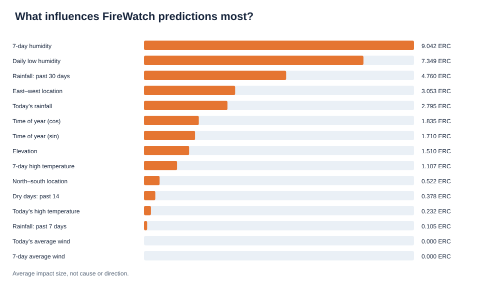
Each dot represents one sampled observation; left means lowers predicted ERC, right means raises it.
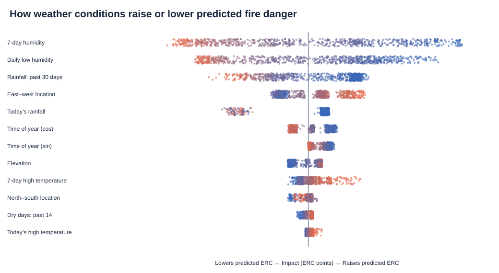
Compare historical humidity against its contribution to the model output.
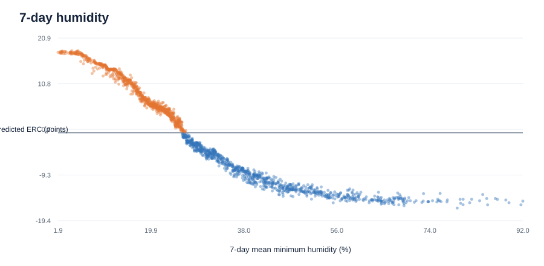
Points show the contribution from the day’s lowest relative humidity.
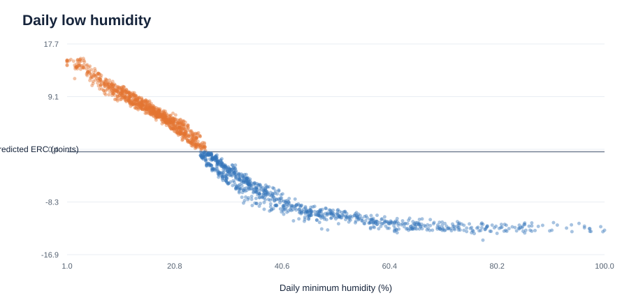
More recent rainfall often raises fuel moisture, but model effects are not causal proof.
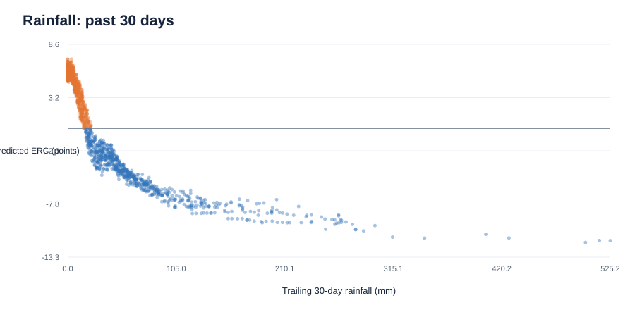
Shows the model’s relationship between recent high temperatures and predicted ERC.
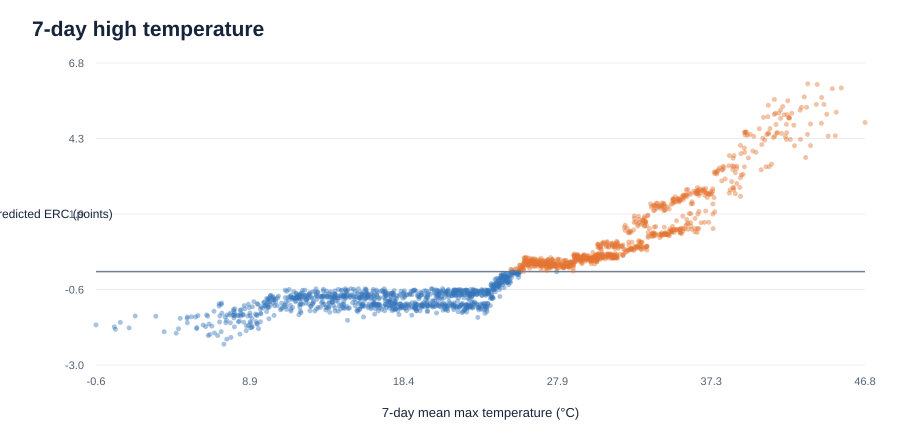
Longitude is an east–west geographic coordinate. Check whether the model relies on regional shortcuts.
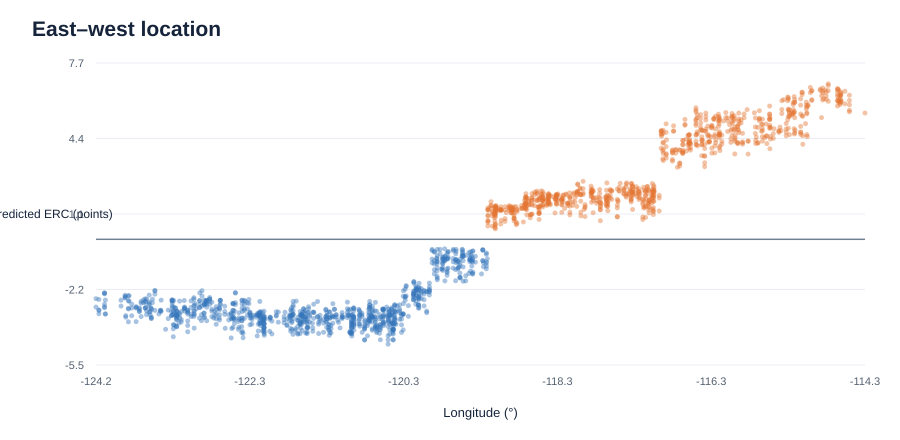
The starting ERC estimate plus contributions from each input yields the final predicted score.
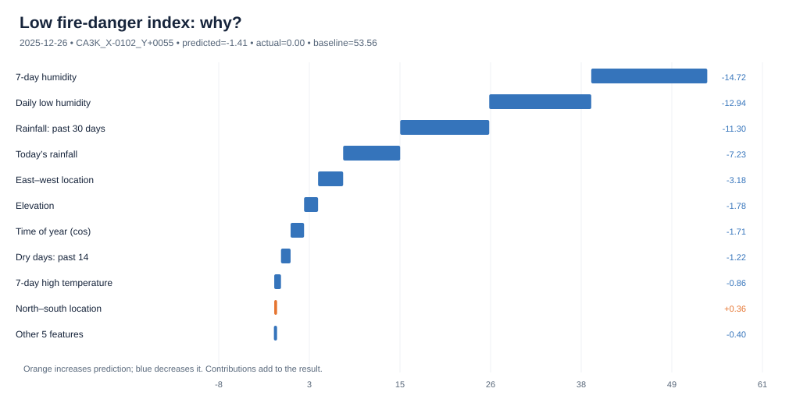
Positive and negative contributions can counteract one another.
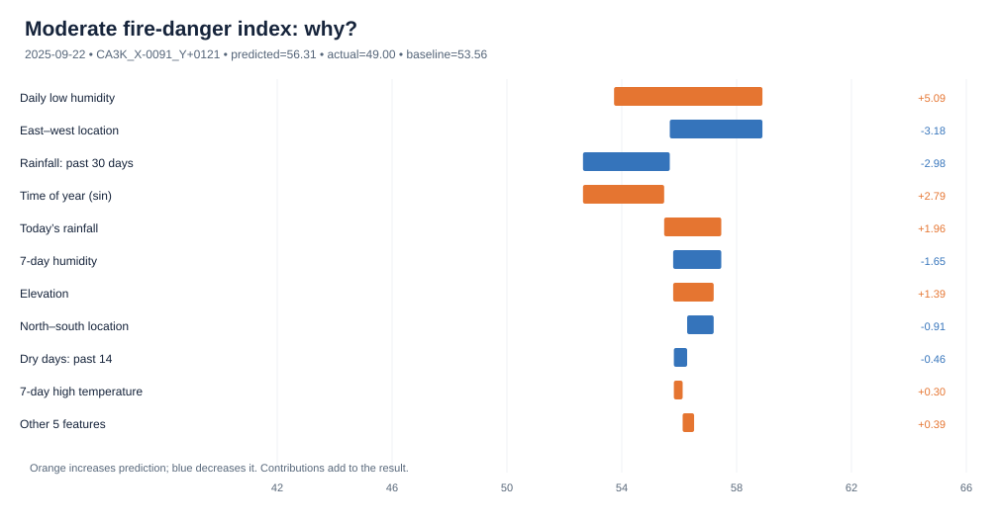
The chart explains the model estimate, not the probability a fire will occur.
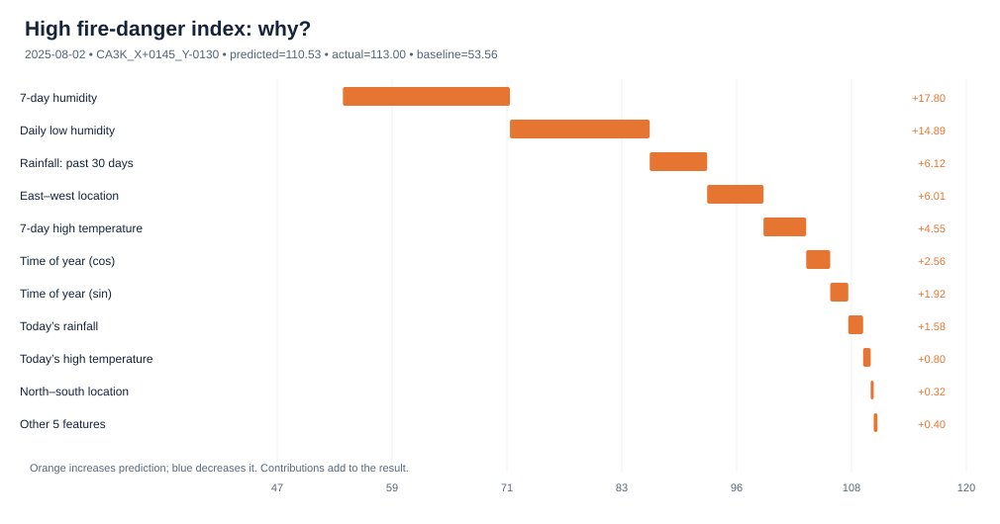
Grouped by actual ERC-G range. Negative values mean average underprediction.
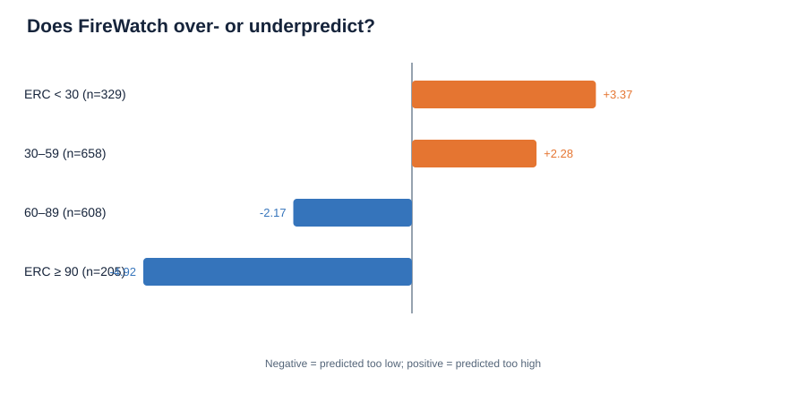
ERC reflects modeled potential energy release under a fuel model, strongly linked to longer-term fuel moisture. Wind matters to wildfire spread, even if it does not directly enter ERC calculation. Explanations describe an ERC-G reconstruction based on observed weather, not seven-day wildfire prediction skill.
Important data-quality note: one illustrated low ERC prediction is negative (−1.41) even though the observed ERC is 0. A negative ERC should not be presented as a physically meaningful fire-danger score. For a user interface, constrain display values to the supported nonnegative range while tracking the unmodified model output in evaluation.
References: Wildfire.gov — ERC · gridMET.